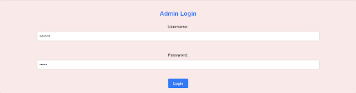
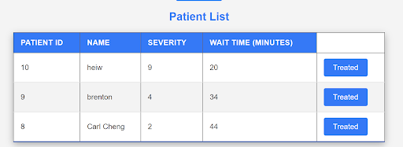
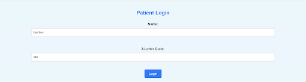
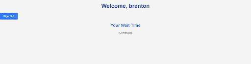

1D Paku Paku Game + Enhanced with PHP
Project Overview:
The project is a web application developed to demonstrate the core skills acquired during the course. The focus will be on creating a Hospital Triage application that assists emergency room staff and patients in understanding wait times. Key technologies include HTML/CSS for front-end design, JavaScript for client-side interactions, PHP for server-side interactions, and Postgres for database management.
Technical Outline:
- Front-End Design:
- Utilize HTML and CSS to create a user-friendly interface
- Ensure responsive design to accommodate various devices
- Add the designed application to the personal profile for visibility.
- Client-Side Interactions:
- Implement JavaScript for dynamic user interactions
- Enable users to sign in with their name and a 3-letter code
.
- Display approximate wait times based on the current queue status
- Server-Side Interactions:
- Use PHP (or similar technology) to handle server-side logic.
- Manage patient data and triage staff operations.
.
- Update the queue and wait times as patients are treated.
- Database Management:
- Implement Postgres to manage patient data.
.
- Ensure data integrity and efficient retrieval.
.
- Separate administrative data management from user access.
- Application Functionality:
- Administrators can view and manage the full list of patients.
- Patients can check wait times by signing in.
.
Visual Outline:
- Admin Log in Page
:

- List of patients of admin dashboard

- Patient Log in

- Patient Wait Time
